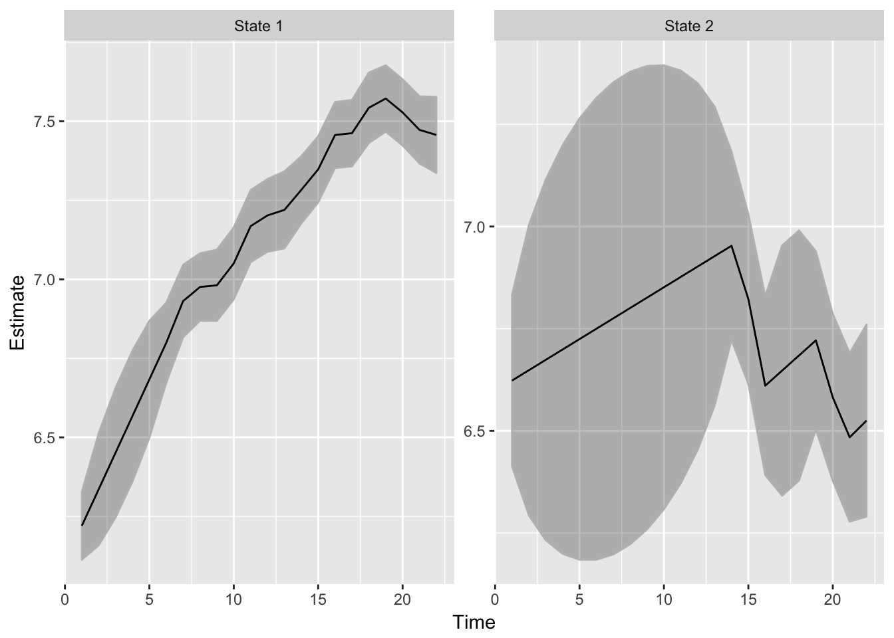
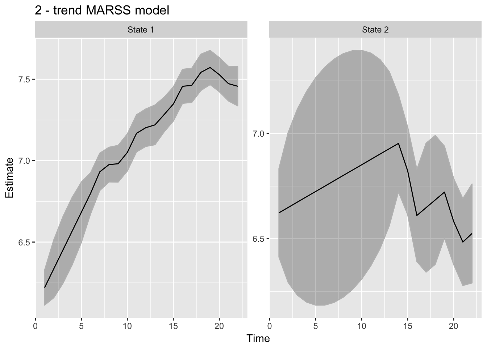

2 Plot states from a MARSS fit
date: March 16, 2018
Required packages
library(MARSS)
library(broom)
library(ggplot2)
library(dplyr)
if(packageVersion("MARSS")<"3.10.4") stop("Need MARSS version 3.10.4 at least.", call.=FALSE)Fit a model
data(harborSealWA)
kemfit <- MARSS(t(harborSealWA[,-1]), model=list(Z=as.factor(c(1,1,1,1,2)),
R="diagonal and equal"))Create a function for fitting.
plot_fitted = function(fitted_model, type=c("states", "fits")) {
if(type=="states") {
states = tidy(kemfit, "states")
states = dplyr::rename(states, state=term)
states$state = paste0("State ",states$state)
g = ggplot(states, aes(t, estimate)) +
geom_ribbon(aes(ymin = conf.low, ymax=conf.high), alpha=0.3, col="grey") +
geom_line() + xlab("Time") + ylab("Estimate") +
facet_wrap(~state, scale="free_y")
return(g)
}
}plot = plot_fitted(kemfit, type="states")
print(plot)
We can still manipulate / add to the plot of the states as we would with any other ggplot() graphics. for example, add a title:
plot = plot + ggtitle("2 - trend MARSS model")
print(plot)